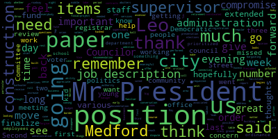

[Hurtubise]: present present present present present present all seven members are present at this time and ask everyone to please rise to salute the flag.
[Falco]: I pledge allegiance to the flag of the United States of America, and to the republic for which it stands, one nation, under God, indivisible, with liberty and justice for all. Yes. Pursuant to Governor Baker's March 12, 2020 order suspending certain provisions of the open meeting law, general law chapter 38, section 18, and the governor's March 15, 2020 order imposing strict limitation on the number of people that may gather in one place, this meeting in the Medford City Council will be conducted via remote participation to the greatest extent possible. Specific information in the general guidelines for remote participation by members of the public and or parties with the right and or requirement to attend this meeting can be found on the City of Medford website at www.medfordma.org. For this meeting, members of the public who wish to listen, or watch the meeting may do so by accessing the meeting link contained herein. No in-person attendance of members of the public will be permitted, but every effort will be made to ensure that the public can adequately access the proceedings in real time via technological means. In the event that we are unable to do so, despite best efforts, we will post on the city of Medford or Medford community media website in audio or video recording transcript or other comprehensive record of proceedings as soon as possible after the meeting. To participate remotely outside of Zoom, please email the city clerk and his email address is H-U-R-T-U-B-I-S-E at Medford-MA.gov. That is A Hertubis at Medford-MA.gov. Mr. President, what's the motion on the rules?
[Knight]: Mr. President, Mr. Vice President.
[Falco]: On the motion of Councilor Scarpelli to suspend the rules, seconded by Councilor Knight. Clerk Hertubis, please call the roll.
[Hurtubise]: Councilor Paris. Yes. Vice President Caraviello.
[Falco]: Yes.
[Hurtubise]: Councilor Lange? Yes. Councilor Larkins? Yes. Councilor Morocco?
[Falco]: Yes.
[Dave Rodrigues]: Councilor Scarpelli?
[Falco]: Yes. Senator Falco? Yes. Senate affirmative, zero in the negative. The rules are suspended. Councilor Scarpelli?
[Scarpelli]: Mr. President, we'll take paper 20641, from the honorable president, I mean, from the mayor, in regards to the executive, moving to executive session, please.
[Falco]: Okay, communications from the mayor. 20-641, November 13th, 2020. the electronic delivery to the Honorable President and members of the Medford City Council, City Hall, Medford, Massachusetts, 02155. Dear Mr. President and City Council, as I respectfully request that the City Council meet in executive session with representatives from my administration and legal council to discuss small cell telecommunications equipment siting in the city of Medford and impending litigation stemming from the same. I request that the city council go into executive session on the following topic. Executive session, Mass General Launch Chapter 30A, Section 21A3, to discuss strategy with respect to potential litigation. Celco Partnership, DBA, Verizon Wireless. As an open meeting may have a detrimental effect on the litigating position of the city of Medford. Sincerely, Breanna Lungo-Koehn, Mayor. Okay, on the motion of Councilor Scarpelli, seconded by Councilor Knight to go into executive session.
[Hurtubise]: Clerk Hurtubise, please call the roll. Yes. Yes. Yes.
[Falco]: Yes.
[Hurtubise]: Yes.
[Falco]: Yes. 70 affirmative, zero in the negative. The council will now move into executive session. Communications from the mayor, 20-63. No, we're under suspension. 20-635, November 5th, 2020. To the Honorable President and members of the Medford City Council, City Hall, Medford, Massachusetts, 02155. Dear Mr. President and City Council, as I respectfully request and recommend that your Honorable body amends the fiscal 2021 budget to appropriate 740,000 in available funds. to the following departments as follows. $200,000 for union contracts, $100,000 early retirement incentive, $10,000 translation services, $95,000 facilities manager, $200,000 with facilities maintenance. and $65,000 administrative assessor and $70,000 for 9-1-1 supervisor. Chief of staff, David Rodriguez and finance director Alicia Nonley-Benjamin are present to answer any of the council's questions regarding the matter. Sincerely, Breanna Lungo-Koehn, Mayor.
[Knight]: Mr. President, thank you very much. This paper was before us last week, and it's a paper that looks to increase the fiscal year budget by $740,000 to fund union contracts, early retirement incentives, and various other services and positions. Over the course of the last week, as this matter was tabled, we did receive some documentation from the administration, job descriptions and the like. With that being said, I'd like to have the paper brought to the table for a further presentation by the administration, and hopefully a vote for this.
[Falco]: Thank you. Councilor Ioannoni, I'm sorry, did you want, I missed that last part. Did you want? Okay. So Alicia and Dave, if you'd like to speak further to this paper, we'd appreciate it. I'll unmute. Alicia, you have been unmuted. Thank you.
[Nunley-Benjamin]: Okay, so tonight's paper is programming some additional funds that we had available due to the governor level funding local aid that we wanted to add back to the operations to stable operations for the city because we had to cut positions because we had estimated in a 10% cut to local aid when we had done the budget addition initially before the governor had announced that he was going to level fund back to the fiscal year 20 levels. Do you want me to go over each position or is that? All you want to hear for a summary?
[Falco]: It might be best to go over each of the positions, just to make sure we're all on the same page, bring everyone up to date. OK. Thank you.
[Nunley-Benjamin]: I'm just pulling it up one moment, please.
[Falco]: No problem. Thank you.
[Nunley-Benjamin]: Okay, so we would like to program $200,000 to negotiated salaries for union contracts, 100,000 for early retirement incentive to negotiated salaries, 10,000 to translation services, 95,000 for a facilities manager, 200,000 for facilities maintenance, 65,000 for an administrative assessor and 70,000 for a 911 supervisor.
[Dave Rodrigues]: And some of the documentation that we had sent by previously that was mentioned by councilor Knight included the job descriptions for each one of those positions. I do know that a number of the councilors had an opportunity to speak with some people in the administration today, as well as the mayor regarding kind of the different perspectives as it relates to this perspectives in the supplemental budget. After some discussion and recognizing and understanding strongly held feelings regarding the elections coordinator position. The administration is certainly willing to reduce the amount being placed into the building maintenance line by $100,000, hold that money in abeyance while those conversations continue to take place with the council and among the administration so that we can formulate a plan moving forward together for that, involving, of course, the board of registrars and other interested parties and stakeholders to talk about that in a thoughtful way. We're happy to amend that paper tonight to reflect that and move forward and have those conversations after we do our after action reports and our meetings with the clerk and with his team and try to figure out a path moving forward on those issues.
[Falco]: Thank you. Council Marks.
[Marks]: Mr. President, thank you very much, and I appreciate the due diligence of the administration providing the job descriptions. It was helpful, Mr. President. The issue at hand that I had last week, as Mr. Rodriguez just mentioned, was regarding the I feel, and I won't speak for my other colleagues, that this is an issue that's been discussed at least for the last two to two and a half years. There's a need in the community to have someone coordinate our elections, Mr. President. We've been very fortunate to have a great staff and a clerk that oversees the process. However, Mr. President, we're at a point right now with early voting, mail-in voting, absentee voting, And our voting rolls have increased over the last number of years, I believe by almost 10,000 new voters in this community. That in my opinion, and I'd like to hear from the city clerk, that this position is well warranted within this community. And I think we should get all the stakeholders, I agree, at the table. However, Mr. President, this is two years now. And I appreciate the commitment from the administration to take 100,000 out of the facilities, but I would like to have a time frame on that, Mr. President. I believe a job description has been drafted, sent to the appropriate personnel within the city administration. And if we can arrive at some type of time frame, Mr. President, I will give it my support tonight. If not, Mr. President, I am tired of lip service. Not to say that that's the case here, but I am tired of lip service. And I want to see action, especially on such an important position in this community, Mr. President. If we can't guarantee to residents in this community that we can have a fair election, Mr. President, and an election that we know is On the utmost regarding security safety, then we're not doing what we were supposed to be doing as elected officials. And I believe having this position would secure that, Mr. President, and it would secure us for a number of years moving forward as we see elections changing, not only in Method, but across the nation. So at this point, I'd like to ask the city clerk, because this is not something we just want to create a position on. This is something that's needed. And I'd like to hear from the chief election officer in the community that's been overseeing the process for the last two years, Mr. President.
[Falco]: Thank you, Councilor Marks. At this point, I recognize the city clerk, Adam Hurtubise. Clerk Hurtubise. Thank you, Mr. President.
[Hurtubise]: Thank you, Councilor Marks. First, let me address One thing that you said, Councilor Marks, our elections are full and fair and transparent and accurate, and they will continue to be so. Just as my predecessor ran full and fair and complete and transparent elections, so have I. At the same time, we do need a full-time election coordinator in this city. We have a part-time election coordinator who is outstanding. I don't think there's any disagreement there. I think she does a terrific job. The goal here is to, because there is election work year round, the goal here is to have an election coordinator who works on election planning, election execution year round in addition to me. I mean, I do a little bit of election work every day. 12 months out of the year and I do predominantly election work for four to five months out of the year. But having an election coordinator whose job is to plan and oversee and execute elections is going to fortify our efforts as a city and to fortify the efforts of the terrific team that I have in the Registrar's of Voters Office. So that we can continue to move into the 21st century with our elections and our election technology.
[Marks]: Can you just speak to the particular need?
[Hurtubise]: I mean, there's a critical need because the number of registered voters is over 41,000 right now. I believe about 10 years ago, it was significantly less than that. It was between 25,000 and 30,000 voters. So we need to have additional staff on board to help administer these elections. I mean, to give you an example, I've been the city clerk for a little over two years, for two years and two months. In the last 14 months, I have overseen five elections. the preliminary election last year, the city election last year, the presidential primary in March, the state primary in September, and the recently concluded election, the national election, the quote unquote presidential election, which we certified yesterday. Five elections in the course of 14 months is an election, you know, less than every, more frequently than every three months. with the number of elections with potential special elections coming coming down the pike. If, for example, I'm using an example. It's a hypothetical. But the hypothetical is if President elect Biden were to appoint Senator Warren to his cabinet, then there would be a a preliminary primary election for a special election to Senate, then there would be a general election to the Senate, again, a special election. There are ripple effects from that. If our member of Congress happened to run for the Senate seat and win, there would be two more elections. If, for example, a state rep then ran for Congress, there would be two more elections, and then there would be two more to fill the state rep's seat. So there could be In one scenario, up to eight more elections this year, in addition to the two that are coming in September and November. That's a lot of elections. We're uncertain about whether there will be early voting in the city elections coming up, or whether no excuse mail balloting will be extended for city elections as well. That's a little bit unclear. But election work is work that requires planning every day, not just the not just during the quote unquote election season. It's a year round job. The city clerk's job is a year round job. And to have an additional staff member working full time on that, who is incredibly well versed in election work and has also become a primary liaison to the Secretary of Commonwealth's office, is a benefit to our city. And it only helps with those full and fair and transparent elections that you were speaking of earlier.
[Marks]: Thank you, Mr. Clerk, and if I could just follow up, Mr. President. It's my understanding, and I think I mentioned this last week, that some many years ago, there used to be two separate positions. It was the city clerk position and elections coordinator position that existed. The person in the election coordinator position, from my understanding, retired. And rather than looking for another election coordinator position, the city clerk took it on as a stipend position. And that's where we fell for many years. And I can guarantee you in all the surrounding communities that the city clerk is not the person that's in charge or coordinates the elections in all the surrounding communities. That is a separate and distinct function and role and separate person. And I think we're at a point right now in this community and the size of this community that this is warranted. I don't believe anyone in the administration doesn't believe so either. But I want to make sure, Mr. President, that we're not here another year from now talking about the same issue and putting our resources into the same things over and over again. So that's why I'm hoping if we can get a commitment tonight on when we will see this position, I'll give the administration all the needed time they need to meet with the stakeholders and parties and draft the job description and so forth. But we need a time frame, Mr. President, that someone will be in that position. And that's how I will vote for this tonight.
[Falco]: Thank you, Councilor Marks. Clerk Hurtubise.
[Hurtubise]: I know that many other cities and towns do have an election coordinator, but in also many of those cities and towns, the city clerk is still the chief election officer in a number of those cities and towns. I mean, I know Boston has a separate election commission. I believe Somerville has a separate election commission. But this position would be a person working directly with me on the election work would be sort of a bridge between the full time staff in the right and report directly to my office. Just just right.
[Marks]: No, I understand that. Thank you.
[Falco]: Thank you, Councilman Moxley. If I may, is the job description already been, is that already set? I know Councilman Moxley had asked.
[Hurtubise]: I did draft a job description and send it to Director Osborne, and I know he's working on it, but I don't know what the final status of it is.
[Falco]: Thank you. Vice President Caraviello.
[Caraviello]: Thank you, Mr. President. Councilman Moxley's right again. As the clerk said, you have a potential of eight elections coming up next year. We're pretty much almost at the end of November here, and we got another. And between the holidays or anything, we're going to be into 2021 a lot sooner than we think. And let's say, to drag this out four or five months, we'll be right back into the same spot we're in now. So this is something I think should be filled by the first of the year. I would think that would be acceptable for me if right after in January this gets filled. The job description, Mr. Clerk, does that have to be advertised for other people? I'm assuming that has to be advertised for other people.
[Hurtubise]: I don't know the answer to that question. I do know that there has been precedent for converting part-time employees into full-time employees. But if it's a brand new job, I don't know the answer to the question.
[Dave Rodrigues]: The job will be posted in advertising. It has to.
[Scarpelli]: Yeah, it has to be posted in advertising.
[Caraviello]: But again, let's say we're four or five weeks away from 2021. this job be filled within the second meeting of the council in January. We've got five, six weeks to get this done. Let's get it done. Before we know it, you're going to have an election around the corner, and we're going to be back where we are. We're going to be saying we should have done this before. So I'll make the motion that the job be filled by the second meeting in January.
[Falco]: So we have a motion from Vice President Caraviello that the position be filled by the second meeting in January. And then the seconded by.
[Scarpelli]: So I have a point of information if I can.
[Falco]: Point of information, Councilor Scarpelli.
[Scarpelli]: Before I vote on this, if I can, I know that we all want this. I think all of us made it loud and clear that we need this position. The Chief of Staff has told us that we're pulling 100,000 aside so we can fund this position, so we have that. Can we really realistically ask the Chief of Staff, what is the timeline for the administration? Are we looking at, is six weeks not enough, but are we looking at two months? Is that realistic? Is there a time limit that we can look this for time certain, date certain? I agree with my colleagues. I think if we could have a date certain, that would really help. So I pose the question to the chief of staff. How does this process go? What do you need, truly?
[Falco]: Chief of staff.
[Dave Rodrigues]: I think the conversation has to happen between the administration and the council. as to what the final decision is. I think there are legitimate differences of opinion in terms of what this looks like, what it does, the job duties I've described, the compensation levels. I think there's a lot of details here that we have to work through and we have to discuss not only with the Council and with the administration, but also with the Board of Registrars and have those conversations. I certainly can't commit to a final decision tonight. I'm not authorized to do that. I can, of course, authorize to speak in good faith and have these conversations outright and say, within the next 60 to 90 days, we'll have a final decision as to what this looks like and exactly how we proceed together.
[Scarpelli]: So we wouldn't entertain a date, sir?
[Dave Rodrigues]: I try never to box myself in on dates certain. I'd say 60 to 90 days I think is appropriate for a good meaningful conversation to take place.
[Scarpelli]: Say 30 days, I mean three months is what, this is what we're trying to get to, Mr. Rodriguez. I think that we're looking maximum you're saying 90 days, so if we looked at three months and we can all agree to that. I think because we're pretty secure what we're looking for on the council, so that piece will go pretty quickly. It's getting the registrars, I think getting them met, meeting with them, finalizing the job description, and then moving forward with that. I think that our piece here for the council, I think. I think we're pretty clear what we want. That's why I'm a little... And getting the mayor to sign off.
[Dave Rodrigues]: The mayor is an important piece of this.
[Scarpelli]: She has some thoughts on this. No, I know.
[Falco]: If I may, I thank you, Councilor Scarpelli. He had a point of information. Vice President Caraviello, at the floor. Vice President Caraviello.
[Caraviello]: To the chair, to the chief of staff. I'm a little confused with your last explanation that you gave there. Can you say that again? I think maybe I missed something in the clarity. and what you were saying.
[Dave Rodrigues]: To which point, sir?
[Caraviello]: When we asked about your date, sir, and you were talking about the job description. Can you go back and repeat what you said just before Councilor Scarpelli came in?
[Dave Rodrigues]: Yeah, we're not making a commitment to create this position tonight. We're moving to take some of this money out of the maintenance account, hold it in abeyance. Why are we moving to grieve the position? The position is discussed. And I think that's the commitment that we're willing to make tonight.
[Caraviello]: So you're saying that you won't make a commitment to fund this position? Is that what you said?
[Dave Rodrigues]: I'm not authorized to do that tonight.
[Caraviello]: Is that what you said? There is no commitment to fund this position?
[Dave Rodrigues]: The commitment is to have the conversation.
[Falco]: That's correct. Vice-President Caraviello, do you have any further questions?
[Caraviello]: That's it for the moment.
[Falco]: Okay, thank you, Vice-President Caraviello. Councilor Bears.
[Bears]: I don't want to cut anyone off who wants to say something, but given what we just heard, I would suggest that we table this item. But I don't want to cut anyone off, so I'm not going to make that motion until everyone's had a chance to speak.
[Falco]: Thank you, Councilor Bears. We have Councilor Knight.
[Knight]: Mr. President, thank you very much. I think the chief of staff is looking for 90 days to finalize the job description, have a meaningful conversation, and come to a final point. May it make sense for us, because there are other positions that are associated with this that I feel are important, like the 911 supervisor, Mr. President. I feel like it's a very important position. And I'd hate to see the 911 supervisor position go unfunded for an extended period of time because we're having a dispute. about a position that's not on the paper before us. We all have our thoughts and our concerns about the registrar of voters' recommendation or opinion as to whether or not this position is needed, number one, what their thoughts are on it. Number two, is this position going to be a bargaining unit position? Is this position going to have supervisory authority over the staff in the voter registration office? These are some questions that need to be hashed out. So I'd offer that we give the administration 45 days to finalize the job description, convene with the registrar of voters, and report back to the council. And we can move forward on the paper that's before us this evening. There are some items on the paper before us this evening that I'm not crazy about, Mr. President. I'll be honest with you. But there are some things in the paper before us this evening that I feel are important. And the facilities manager and the administrative assessor and the 911 supervisor are three positions that we have job descriptions for that I think are a critical need in this community. So I think that there's room for compromise and the ability for us to compromise on this. I just don't want to throw the baby out with the bathwater. because we do have three positions that we do need to fund. And I also don't want to see the money disappear. So with that being said, I rest my case. But I think that, you know, there has to be some middle ground and some compromise that we can reach here in order for us to move the ball forward on the elections coordinated position, but at the same time address some of the needs that this council has requested and voted for in the past. So with that being said, I can appreciate where everybody's coming from. However, I do have concern about that 911 supervisor's position in particular.
[Falco]: Thank you, Councilor Knight. Councilor Marks.
[Marks]: Thank you, Mr. President. And this paper was on the agenda a week ago, and we sent back last Tuesday a message to the administration, and I believe the chief of staff was on the meeting last week with this council's intent. And to come back and say that he has no authority to make any decisions as the chief of staff, I think falls short of the mark, Mr. President. Because clearly the council made it known what our intent was last week. And I agree with Councilor Knight, however, the paper was presented the way it was presented. I don't think we can go through this and pick and choose what items we'd like to move forward with and what items we'd like to sit on. I don't believe we can do that. If the administration wants to recall this, paper and then submit another paper that we can agree upon. Ideally, Mr. President, it would have been nice for the administration maybe to sit down in a committee of the whole at the council and say, hey, look, we have $740,000. These are the things we'd like to do in the community. What are your thoughts? Right? That didn't happen, and so be it, Mr. President. But clearly, I am not going to commit because the administration's unwilling to commit. Because from what I'm hearing tonight, there is no commitment. You can wait your 45 days. They can come out with ten different job descriptions. There's still no commitment to fund this position, Mr. President. And just because they come out with a job description doesn't make me feel warm and fuzzy that that's a commitment. That is not a commitment, Mr. President. Been around a long time, and that is not a formal commitment. And I think we heard that here tonight. So as we stated before, if the council feels this is necessary, Mr. President, we stand up, send the paper back. So if that's the will of the council, I will follow that, Mr. President.
[Falco]: Any other questions from the council? Councilor Bears?
[Bears]: I would move to table this indefinitely.
[Falco]: Okay. And the motion of Councilor Bears to table this, which is undebatable. Does this have a second? Second. Second by Councilor Marks. Clerk Hurtubise, please call the roll. Oh, before you call the roll Councilor Knight.
[Knight]: No, no, I was just getting ready to call the roll. I'm the third one, you know, so I hit my mic.
[Falco]: I thought you wanted to weigh in again. Okay. I apologize. On the motion of Councilor Bears to table seconded by Councilor Marks. Clerk Hurtubise please call the roll.
[Hurtubise]: Councilor Bears. Yes. Vice President Caraviello. Yes. Councilor Knight. No. Councilor Marks.
[SPEAKER_10]: Yes.
[Hurtubise]: Councilor Morell.
[SPEAKER_10]: Yes.
[Hurtubise]: Councilor Scarpelli? Yes. President Falco?
[Falco]: Yes. Six in the affirmative, one in the negative. The paper has been tabled.
[Bears]: While we're under suspension, take 20-476 off the table. Marijuana commission for third reading.
[Falco]: While we're under suspension, 20-476, which is eligible for its third reading. Second. Seconded by Vice President Caraviello, Clerk Hurtubise, please call the roll.
[Hurtubise]: To take it off the table?
[Falco]: To take it off the table, correct.
[Hurtubise]: Yes. Yes. Yes. Yes. Yes. Yes. Yes.
[Falco]: Is it City Council on October 13th, 2020 for its first reading. Advertise November 5th, 2020 in the amendment transcript and it is eligible tonight for its third reading, November 17th, 2020. Move approval.
[Caraviello]: Second.
[Falco]: I motion Council Knight to approve. Seconded by Councilor Bears. Clerk, please call the roll.
[Hurtubise]: Councilor Bears. Yes. Vice President Caraviello. Yes. Councilor Knight. Yes. Councilor Marks.
[Falco]: Yes.
[Hurtubise]: Councilor Morell?
[Falco]: Yes.
[Hurtubise]: Councilor Scarpelli? Yes. President Falco?
[Falco]: Yes. Seven in the affirmative, zero in the negative, the motion passes.
[Knight]: Motion to revert back to the regular order of business, Mr. President. Second.
[Falco]: Any motion of Councilor Knight? Seconded by Councilor Villescaz to revert back to the regular order of business. Clerk, please call the roll.
[Hurtubise]: Councilor Bears. Yes. Vice President Caraviello. Yes. Councilor Knight. Yes. Councilor Marks.
[Falco]: Yes.
[Hurtubise]: Councilor Morell.
[Falco]: Yes.
[Hurtubise]: Councilor Scarpelli. Yes. President Falco.
[Falco]: Yes. Setting the affirmative, adjourning the negative, the motion passes. Okay, hearings. 20-600 petition for grant of location, National Grid, gas main locations, Medford, Massachusetts, city clerk's office. This is a continuation of a public hearing from last week. I believe we have someone on the, let's see, we have Diana Cuddy from National Grid with us, if I'm correct?
[Diana Cuddy]: Yes, good evening. Diana Cuddy, National Grid, 40 Sylvan Road, Waltham, Massachusetts.
[Falco]: Thank you, Diana. When we last left off, I believe Councilor Marks had questions, if I'm correct.
[Marks]: Councilor Marks, would you like to- Thank you, Mr. President, and I appreciate the representative from National Grid being on the call again tonight. The question I think which was supported by this council, Mr. President, was to have Diana go back to National Grid regarding putting together some mitigation to address curbing in the area of Riverside Ave that this construction work was going to be done. I think the total construction paving and marking, according to the representative from National Grid, was about $400,000. We by no means were looking for mitigation to that level. However, we were looking to address the lack of the appropriate height of curbing on Riverside Ave, which currently right now is level with the street and very dangerous to pedestrians. So I would like to just find out what Diana came back with regarding her conversation.
[Falco]: Diana, if you could please provide us with an update. Thank you.
[Diana Cuddy]: Okay, thank you very much. Yes, I spoke to our legal counsel and he sent an email to city solicitor and he did receive a response back today, but it was late afternoon. So they're still in a dialogue over the best way to work out these details. So I've been asked to see if we can continue this to the second weekend or second week in December. So that they have a chance to discuss all the items that they're going over. December 8th.
[Hurtubise]: Okay.
[Falco]: And the motion of council on night to table this to the second meeting of November, which I believe is December 8th, seconded by vice-president Caraviello. Please call the roll.
[Hurtubise]: is to table to December 8th. Councilor Bears. Yep. Vice President Caraviello. Yes. Councilor Knight. Yes. Councilor Marks. Yes. Councilor Morell.
[Nunley-Benjamin]: Yes.
[Hurtubise]: Councilor Scarpelli.
[Falco]: Yes. Six in the affirmative, one absent, the motion passes and the matter is tabled until December 8th.
[Caraviello]: Mr. President. Before she leaves, she said she was going to provide a number for us, for Verizon, for the double polls.
[Diana Cuddy]: And I- Yes, I did do that. I sent that over to Tim earlier.
[Caraviello]: Okay, because I had called earlier in the week, last week, and he didn't have it. He has it now?
[Diana Cuddy]: I'm sorry, I sent it over today.
[Caraviello]: Okay, thank you.
[Diana Cuddy]: My notes today, and I noticed that I had written it down, and I forgot to do it.
[Caraviello]: Thank you.
[Diana Cuddy]: Thank you, Diane. Yeah. I was just going to say, just to make a point about that. So we reached an agreement with Verizon that we own the pole going in and then we take our wires, which are the top wires on the pole over. And as they, their job is to coordinate the other utilities, bringing their wires as they progress down the pole over to the new one. And then they take the old pole out. So I think part of the problem sometimes for them is to get the other utilities or other wires on the pole on the existing poll to go over. But I had some luck with the gentleman's name that I gave to Tim earlier today, and he's actually dealt with him on some other issues. So I'm hopeful that that will work out. Thank you.
[Falco]: Okay, thank you very much. Okay, so that has been tabled to December 8th. The notice of a public hearing, 20-622 petition for grant of location, National Grid, gas main locations, Medford, Massachusetts, City Clerk's office. You are hereby notified that by order of the Medford City Council, Medford City Council will hold a public hearing via Zoom on November 17th, 2020. 2020, a link to be posted no later than Friday, November 13th, 2020 on a petition of Boston Gas DBA National Grid for permission to locate gas mains as herein after described for the transmission of gas in and under the following public streets, lanes, highways, and places of the city of Medford.
[Marks]: And for the pipes, valves, governors, manholes, and structures, fixtures, and appearances designed- Mr. President, motion to waive the remainder of the reading, and if the representative from National Grid can give a brief synopsis of the request.
[Falco]: Thank you. Thank you, Councilor. Thank you, Councilor Marks. On the motion of Councilor Marks, seconded by Councilor Knight, to waive the reading to have a brief synopsis from a representative from National Grid. Clerk Hurtubise, please call the roll.
[Hurtubise]: Councilor Bears. Vice President Caraviello. Councilor Knight. Councilor Marks. Councilor Morell. Councilor Scarpelli.
[Falco]: President Falco. The motion passes. Ms. Cuddy, if you could please give us a brief synopsis of the project.
[Diana Cuddy]: Sure, yes, thank you. Tonight I'm here to request a ground location to install and maintain approximately 532 feet of a new four inch plastic main extending from an existing two inch plastic main on Winter Hill Road going on to Medford Street and extending to the service location at 87 Medford Street.
[Falco]: Thank you. This here has been approved by the chief engineer with the following conditions. The engineering division recommends that the grant application be approved with the following conditions. Number one, the grant application is limited to approximately 532 feet of plastic gas main as described in the petition. To install and maintain approximately 532 feet of new four-inch plastic main extension from the existing two-inch plastic main in the Whitty Hill Road going on to Medford Street and extending to the service location at 87 Medford. Number two, before starting work, the contractor shall notify DIGSAFE. It shall obtain all applicable permits. from the engineering division. The project must obtain a street opening permit pursuant to section 74-141 of the city ordinances prior to commencing work. Number three, no other utility structures, conduits, duct banks, pipes, or any other appearances. are adversely impacted, National Grid shall ensure that all sewer, water, and drain lines are marked prior to any excavation. Number four, the sidewalk and street restoration must be done in consultation with the engineering division and per the requirements of an approved street opening permit. The concrete sidewalk must be replaced in kind and cleanly cut at the control joints. The de minimis concrete pavement over the trench shall be milled and overlaid as described below. A Winter Hill Road includes approximately 130 feet of new gas main. This section of the street also includes trench patches associated with gas service work. Winter Hill Road should be restored with a mill and overlay that encompasses past national grid patches. B, the side of Medford Street with the proposed main includes multiple gas related trench patches that extend to the center seam of the roadway asphalt. It also includes trenches associated with other utility connections for 87 Medford Street. The Medford Street surface restoration should include mill and overlay from curb to central line seam. C, it is the understanding of the engineering division that the owner of the 87 Method Street project will provide the street restoration. The engineering division takes no exception to the owner providing this scope. However, National Grid remains responsible for confirming that the restoration is performed in accordance with this grant of location, the standards of the city of Medford, and the associated street opening permit. Number five, the new four inch gas main appears to be offset with the existing drain line by approximately three feet. This offset should be confirmed and maintained. Number six, the new four inch gas main appears to pass in between two drainage structures near 85 Medford Street. The condition of these structures in lateral must be verified before and after construction with the highway division. Number seven, pavement markings must be restored. Number eight, the project site must be swept daily and shall be kept free of debris for the duration of the installation. Number nine, Medford Street is a highly traveled roadway for vehicles as well as pedestrians. A detailed traffic management plan must be submitted to the engineering division for review and approved prior to receiving a street opening permit. The TMP traffic management plan must include accommodations for pedestrians in addition to vehicles. Number 10, the plan submitted with the petition is not stamped by a professional engineer. National grid must, must submit a professional engineer stamp plan to the engineering division prior to release of a street opening permit. Number 11, only one service is shown 87 Medford street. This project is limited to that one service. If national grid, Plans to provide additional services, especially to the east side of Medford Street as part of this project, the engineering division must be notified and the surface restoration must be curb to curb. Call 781-393-2501 for any accommodation. AIDS, TDD, 781-393-2516. For further information, contact the city clerk at 781-393-2425. The city of Medford is an EEO, AA 504 employer. By order of the city council, Adam L. Herdeby, city clerk. At this point, I would declare the public hearing open. Open to those in favor of the petition. Ms. Cuddy, would you just give your name and address for the record, please, if you are in favor?
[Diana Cuddy]: Yes, Diana Cuddy, National Grid, 40 Sylvan Road, Waltham, Massachusetts.
[Falco]: Thank you very much. Is there anyone else that is in favor of the petition that would like to speak? Anyone? Okay, hearing and seeing none, I declare this portion of the hearing closed. Anyone in opposition of the petition? Is there anyone online tonight that is in opposition to the petition that would like to speak? Okay, hearing and seeing none, I declare this portion of the hearing closed. Do any of the councilors have questions? Councilor Scarpelli.
[Scarpelli]: Again, if we can, do you know when this project, the only thing that, as we're getting later in the season, I'm just a little concerned about the trench work that's being done and the sinkage that happens during the time of year when the hot top is laid and then with the frost, it sinks. So I'm a little concerned about, is the city engineer present? No.
[Falco]: Tim McGivern, I'm going to unmute you. Okay, Tim McGivern, City Engineer.
[McGivern]: Hello, Honorable Councilors.
[Falco]: Hi, Tim.
[McGivern]: To touch upon that point, through the Chair, so that's a separate process to grant permission for winter work. And it's a dual approval by the DPW commissioner and myself. And the default position is November 15th. We don't allow street open permits in the city without a special exception.
[Scarpelli]: OK, so if it's done in that time, it's safe to say that we're not going to see the significant road sinkage that we see happening sometimes, Tim.
[McGivern]: Well, we're in the moratorium now, and I don't believe we've been asked permission for this particular project, but you do touch upon something that is correct. If you do work during, especially freezing temperatures in the winter that is associated with soil, then the next season, when the temperatures increase, so the next weeks, you can get consolidation that you wouldn't anticipate in cold weather. So that is one of the reasons why we don't, we try not to allow winter work.
[Scarpelli]: Okay, so this isn't going off now? this project.
[Diana Cuddy]: So we have prepared the TMP and we have the PE stamp drawings ready to go as early as tomorrow. And then, of course, there would be some guarantee on the condition of the patch.
[Scarpelli]: I apologize. I'm not too... I'm not... I'm asking the city engineer. All due respect, Ms. Cuddy, all due respect, I don't have much faith with the utilities when it comes to our streets. There are sink holes all over the community because we didn't do our due diligence. So I want to make sure that if we do find a way to approve this, And we normally don't have a clerk of the works that follows up on these issues as we move forward. What guarantees do we have that the road is going to be in good shape come spring? Or if not, who is National Grid going to come back to fix that and put it to where we feel it's acceptable? Tim.
[McGivern]: Am I still being addressed?
[Falco]: Yes. Yeah. Tim, that was to you.
[McGivern]: Yeah, so we do our best to try to hold utilities accountable if we come across a cave-in or if we come across a settlement that creates a hazard. We do try to stay on top of that. For something like this, if the commissioner were to give permission for winter work, weather dependent of course, Then we would follow up in the springtime, usually a season later, to confirm any settlement issues or things like that. That is the procedure we try to have. So at least a season of settlement for the temporary situation to identify any issues. We typically go through that procedure.
[Scarpelli]: Okay, national group being the petitioner today, are they usually forthcoming with making those corrections if that happens?
[McGivern]: The team is typically responsive to our concerns. Most recently, we noticed some issues with some curbing in Redford Square. And we called them up. And within a couple of days, I believe, they were mobilized to take care of it. So that happens on a regular basis. But we try to measure and inspect shortly thereafter the work, obviously, if we can. All right.
[Scarpelli]: Thank you.
[Falco]: Thank you, Councilor Scarpelli. Councilor Knight.
[Knight]: Mr. President, thank you very much. I'm very familiar with this portion of the city, this area. Is this gas main going to be connecting to that construction project on Medford Street? Is that what 87 Medford Street is, that big building that they just built there on the border? Yeah. It is. OK. And forgive me if I missed it. How long is the construction going to take for this 532 feet?
[Diana Cuddy]: They anticipate it'll take about two weeks.
[Knight]: Two weeks. And when is the construction going to be performed during the day, during the night?
[Diana Cuddy]: That's up to the conditions on the permit.
[Knight]: Tim?
[McGivern]: So that, we always discuss that with the police and You know, we take a look at that. For this stretch road, I'm not exactly sure what would drive us to say have it done at night, for example. But we always take a look at that pretty closely and talk with the police department if we need to look at night work or weekend work or off hour work. But we haven't looked at this particular project in that depth quite yet.
[Knight]: Is it possible we could just have a pre-construction meeting with the abutters on the roadway before the work begins? Yep. Excellent. Thank you very much.
[Falco]: Thank you. Councilor Knight. Any questions from the council? Vice President Caraviello to approve. Seconded by Councilor Knight. Clerk, please call the roll.
[Hurtubise]: Councilor Bears? Yes. Vice President Caraviello? Yes. Councilor Knight? Yes. Councilor Marks? Yes. Councilor Morell? Yes. Councilor Scarpelli? Yes. President Falco?
[Falco]: Yes. Seven the affirmative, zero the negative. The motion passes. Thank you. Thank you. Motions, orders and resolutions 20-640 offered by Vice President Caraviello and Councilor Knight. Be resolved. That the Medford City Council send its deepest and sincere condolences to the family of long time West Medford resident, Leo McHugh, whose presence in our community will be dearly missed. Vice President Caraviello.
[Caraviello]: Thank you, Mr. President. Mr. President, I don't think anybody in West Medford who was a Democrat in this city didn't know Leo McHugh. Leo McHugh was doing ward and city politics. long before any of us were sitting around this table here. I met Leo in, I think it was 1968, 69, when he was a student teacher, a substitute teacher at the high school. That's when I first met him. And I became friends with him. We've been friends for a long time. And I said, here's a man, BC Golden Eagle graduate. with the clerk. Again, this man, he bled blue Democratic politics in the city of Medford. Democratic party is going to be the sore spot for him to be missed from the party. And I send this condolences off to his family. As I say, Leo's going to be missed. I mean, he was holding the sign, Biden's sign. Just last week, even after the election, I saw him at West Medford and see him all the time, and shocked when I got the call. But he's a good man, good Democrat. Democratic party in the city, big loss for them. Thank you, Leo.
[Falco]: Thank you, Vice President Caraviello.
[Knight]: Mr. President, thank you very much. In addition to Leo's role in Democratic politics here in the city of Medford, he was also a great family man, a great husband, lived on Jackson Road for a long time. And I can first remember meeting Leo as a young kid, first getting involved in politics, working for Senator Shannon. And Leo pulled me aside down at the West Medford Spa and talking to me about Various issues going on in the community. So I remember Leo running for office. I remember Leo chairing the Wood Six Democratic City Committee. But most of all, I remember Leo being someone who genuinely cared for people and went out of his way to give a kind word, to help out people in the neighborhood. And just as a young kid, to give me a pat on the back and tell me to keep doing what I was doing. So it was very motivating, Mr. President. He's going to be sorely missed, and I'm sad to see him go. So with that being said, I echo Councilor Caraviello's condolences.
[Falco]: Thank you, Councilor Knight. Councilor Moniz.
[Marks]: Thank you, Mr. President, and I want to thank my two colleagues for putting this on. This was a real big shock, Mr. President. Leo was always very spunky. He'd be the first to give a good word and also tell you the truth on something, too. He didn't hold back any punches when you talked to Leo. He'll tell you how it was, and as Councilor Caraviello put it so eloquently, he was involved in a lot of different things in the community. But what stands out to me is the involvement, those late night meetings that we used to have with the Democratic Warded City Committee. He would be out on every issue supporting his cause. He was a man of, really, of integrity and someone you can count on as a friend. And he will be sorely missed, Mr. President.
[Falco]: Thank you. And I just want to thank my council colleagues as well for bringing this forward. Leo was a great guy. I met him when I first got involved in running for office. He was always very encouraging, always willing to talk about issues, and a big, big part of the Democratic Wood City Committee. He will be sorely missed, and our thoughts and prayers go to his family. At this point in time, I'd ask everyone to please rise for a brief moment of silence. On the motion of Councilor Scarpelli, seconded by Councilor Beer, should take... Oh, I'm sorry. On the motion of, let's see, on the motion of Vice-President Caraviello and Councilor Knight, seconded by Councilor Scarpelli, Clerk Burnaby, please call the roll.
[Hurtubise]: Councilor Bears. Yes. Vice-president Caraviello. Yes. Councilor Knight. Yes. Councilor Marks.
[Falco]: Yes.
[Hurtubise]: Councilor Morell.
[Falco]: Yes.
[Hurtubise]: Councilor Scarpelli. Yes. President Falco.
[Falco]: Yes. And the affirmative. The negative motion passes. On the motion of council Scarpelli seconded by council appears that we take papers on the suspension. Please call the roll.
[Hurtubise]: Councilor Bears. Yes. Vice-president Caraviello.
[Nunley-Benjamin]: Yes.
[Hurtubise]: Councilor Knight? Yes. Councilor Marks?
[Falco]: Yes.
[Hurtubise]: Councilor Morell?
[Falco]: Yes.
[Hurtubise]: Councilor Scarpelli? Yes. President Falco?
[Falco]: Yes. Seven the affirmative, zero the negative. The motion passes. 2-0-642 offered by Councilor Marks and Councilor Scarpelli. Be it resolved that a moment of silence be held for a long time, met with President Trieste Silvio on his recent passing. Councilor Marks.
[Marks]: Thank you, Mr. President. Thank you, Mr. President. Anyone that knew Trieste knew him as a real family man. Married for many, many decades to his wife, Lucy. They were always together. Trieste was a loving husband, a loving father, grandfather, and great-grandfather, Mr. President. And they were a staple, he was a staple in Salt Method for many years. A family very involved in the community. And he will be solely missed, Mr. President. I would ask if we could, in honor of him, that this meeting be dedicated in Trieste Silvio's name, Mr. President.
[Falco]: Thank you, Council Marks.
[Scarpelli]: Thank you, Mr. President. Thank you, Councilor Marks, for bringing this forward. And Mr. Silvio, I grew up with the Silvios. His youngest, Frank, was one of my closest friends and a solid member of our community, someone that loved South Medford. And as this family would tell you, if you're a politician, you don't win unless the Silvios are pushing for you. So we're going to miss Mr. Silvio. I know Mrs. Silvio, she's a fixture at the McGlynn as a lunch mother. And I know Mr. Silvio used to be there every day to pick her up and someone that we're going to miss seeing around the city. So our condolences to the Silvio family. Thank you.
[Falco]: Thank you, Councilor Scarpelli. At this point, I would ask everyone to please rise for a brief moment of silence. Thank you. On the motion of Councilor Marks and Councilor Scarpelli, seconded by Councilor Knight, that we have a brief moment of silence and that we dedicate this meeting in Mr. Silvio's name. On that motion, collector to be, please call the roll.
[Hurtubise]: Councilor Bears? Yes. Vice President Caraviello? Yes. Councilor Knight? Yes. Councilor Marks? Yes. Councilor Morell? Yes. Councilor Scarpelli? Yes. President Felke?
[Falco]: Yes. Seven in the affirmative, zero in the negative. The motion passes. Reports of committees, Tuesday, 5, 4, 5, November 10th, 2020. Subcommittee on ordinance report. Councilor Knight, would you like to speak to that?
[Knight]: Yes, Mr. President. This was a review of some of the ordinances that we've been. Working on, we went through a number of items on the agenda that were outstanding and have prioritized those items. We will be reconvening next month to go over them. There are a couple of items that we were discussing. Extended illness leave bank for city and school department employees. $15 minimum wage for city and school department employees. Councilor Marks's small cell tower ordinance was something that actually came up in the discussions as well. And I'm missing something here, I'm leaving one out. Councilor Morell, help me.
[Bears]: Short term rentals.
[Knight]: Short term rentals, that's exactly what it was. She sponsored that so I was throwing it out there. So Mr. President, we made some great progress and we've developed an action plan. We've prioritized the papers and we're going to be moving forward hopefully to a committee of the whole with a work product for us all to review and be proud of.
[Falco]: Great news. Thank you, Councilor Knight. On the motion of Councilor Knight, seconded by Councilor Scarpelli. Clerk Hurtubise, please call the roll.
[Hurtubise]: Councilor Bears? Yes. Vice President Caraviello? Yes. Councilor Knight? Yes. Councilor Marks? Yes. Councilor Morell? Yes. Councilor Scarpelli?
[Falco]: Yes.
[Hurtubise]: President Falco?
[Falco]: Yes. Seven in the affirmative, zero in the negative. The motion passes. If I'm correct, it's records, right? Two sets. Two sets of records. So we have the records. The table of records of October 27, 2020 were passed to Councilor Knight. Councilor Knight, how did you find those records?
[Knight]: Long and in order, Mr. President. Move approval. Second.
[Falco]: On the motion of Councilor Knight to approve the records, seconded by Councilor Bears. Clerk, how to be, please call the roll.
[Hurtubise]: Councilor Bears? Yes. Vice President Caraviello? Yes. Councilor Knight? Yes. Councilor Marks? Yes. Councilor Falco?
[Falco]: Yes. Councilor Scarpelli?
[SPEAKER_10]: Yes.
[Falco]: Yes, seven in the affirmative, zero in the negative. The motion passes. Excuse me, the records of the meeting of November 10th were passed to Councilor Marks. Councilor Marks, how did you find those records?
[Marks]: I review the records, find them to be in order, and move approval, Mr. President.
[Falco]: On the motion of Councilor Marks, seconded by Councilor Lateef to approve the records. Clerk, please call the roll. Yes. Yes. Yes. Yes. The negative motion passes.
[Bears]: Motion to adjourn.
[Falco]: On the motion of council appears to adjourn the meeting.
[Marks]: Mr. President, before we adjourn.
[Falco]: Council remarks.
[Marks]: Thank you, Mr. President. Thank you. The council last week voted to have an on-site meeting up to heights on Fulton Spring Road and so forth. This Saturday, Mr. President, I would ask that we get a correspondence from the city administration regarding the reverse 9-1-1 that I believe Councilor Knight requested to notify area residents. And also that we get a correspondence of the location and the time. I think we established 11 o'clock.
[Falco]: I don't mind. I'll buy it.
[Hurtubise]: Awesome.
[SPEAKER_10]: That's fine. And it's a city council committee, the whole meeting.
[Falco]: Correct. And I was, I was waiting for department heads to get back to me. So I haven't heard from everyone, but I'll give a final call.
[Scarpelli]: It's 11 o'clock. So, okay.
[Marks]: Mr. President, I just want to stress, it's extremely important that when we meet as a council to discuss neighborhood concerns, public safety concerns, that we get a buy-in from the city administration. And it's extremely important that all the parties that can make substantial change in this community be present, Mr. President. So I would be extremely disappointed if we didn't see the leadership in this committee, this community, show up to this particular Committee of the Whole meeting when we're discussing very important issues up the heights, Mr. President.
[Falco]: I would agree with you as well. Thank you, Councilor Marks. On the motion of Councilor Bears, seconded by Councilor Knight, that we adjourn the meeting. Clerk Hurtubise, please call the roll.
[Hurtubise]: Yes.
[Falco]: Yes. 70 affirmative. During the negative. The meeting is adjourned. Thank you. Good night.
|
total time: 19.37 minutes total words: 2779 |
total time: 4.86 minutes total words: 1030  |
total time: 4.48 minutes total words: 690 |
total time: 10.18 minutes total words: 1649 |
|
total time: 3.69 minutes total words: 572 |
total time: 0.39 minutes total words: 76 |
||
{kind=link}
{kind=link}
{kind=link}
{kind=link}
{kind=link}
{kind=link}